Overview
An Electronics Factory That Happened to Build Arcades
Vinnytsia Production Association “Terminal” was not founded to make arcade games. It was a large Soviet electronics enterprise whose normal work centered on video terminals, displays, monitors, industrial electronics and computer-terminal equipment. Arcade machines occupied only one corner of that much larger business, yet that corner produced one of the most distinctive Soviet video-game platforms of the 1980s.
Terminal’s arcade history is easy to oversimplify. The company did not merely copy a single foreign game, put it in a cabinet and move on. Its engineers passed through several generations of amusement hardware before developing a reusable color microprocessor platform known as TIA-MC. Around that platform formed a small group of hardware engineers, programmers and pixel artists whose work continued even after the original development team moved outside Terminal’s direct organizational structure. The same software family later crossed into a separate Lithuanian hardware line made by Sigma, while still later games appear to have circulated as replacement ROM sets rather than as complete new cabinets.
That history leaves two different totals that have to be kept separate. Terminal itself can presently be credited with ten confirmed video-arcade titles or complete-machine offerings: four earlier television/video games and six first-model TIA-MC offerings. The broader TIA-MC software family reached twelve completed games. Six of those twelve survive in playable form today. Six are still lost.
The surviving machines and ROMs tell only half the story. Much of what is now known about Terminal’s arcade work has been reconstructed from technical documents, museum discoveries, former employees, preservation projects and scattered Soviet-era records. The resulting picture is no longer a vague footnote. Terminal was a substantial industrial enterprise that built its own arcade hardware, developed original games around Soviet engineering constraints, and left behind a platform whose preservation remains unfinished more than three decades later.
From Automation Equipment to “Terminal”
The company’s origins predate its arcade work by more than a decade. Archival records from the State Archive of Vinnytsia Region place the construction of the factory in the period from 1968 through 1970. The plant was formally commissioned in 1971 and initially operated within the structure of Kyiv Production Association Elektromash.
Its original purpose lay in automation and electronic equipment rather than entertainment. Over time, the factory’s specialization increasingly centered on video-terminal and display technology. In 1977 it was renamed the Vinnytsia Plant “Terminal,” a name that better reflected the direction of its work. By 1981 it had become the Vinnytsia Production Association “Terminal.”
That 1981 date is important because older secondary histories sometimes place the formation of the Production Association in 1984. Contemporary evidence does not support 1984 as the first appearance of the organization. A Soviet patent application filed in 1982 already names the applicant as Vinnytsia Production Association “Terminal,” while the archival guide explicitly places the Production Association in 1981. The earlier 1984 date is therefore best regarded as a mistaken or misunderstood later organizational milestone rather than the company’s true beginning as a production association.
Terminal’s principal business remained industrial electronics. The enterprise produced video terminals and related equipment, including VTA-2000 and SM-series terminal/display products, monitors and equipment used in transportation and other Soviet systems. A technical publication from the late 1980s gives the address of its research institute and production association on 600-letiya Street in Vinnytsia, illustrating how closely the research and manufacturing arms were tied together.
The scale of the enterprise also matters. Terminal was not a tiny game workshop hiding in a back room. By the post-Soviet privatization period, local reporting described a workforce numbering in the thousands. Arcade games were a specialized branch inside an organization with the engineering staff, board-production capability, display expertise and industrial infrastructure needed to build complex electronic products at scale.
Before TIA-MC
Terminal’s involvement with amusement equipment began before its confirmed video-game period. By the time engineer Alexander Gonorovsky joined the enterprise in 1979, an electromechanical Motorcycle Racing machine was already in serial production. That earlier machine used physical and optical mechanisms rather than a conventional video-game architecture. It does not belong in Terminal’s video-game output count, but it shows that amusement equipment was already an established product category before the company began experimenting with television games.
The first confirmed Terminal-linked video arcade generation emerged in the early 1980s. Work was carried out through the enterprise’s video-terminal research structure, which was well positioned to adapt display and digital-electronics expertise to interactive games.
Four distinct titles form this pre-TIA generation.
The first was an early black-and-white version of Gorodki, based on the traditional bat-and-skittle sport. This should not be confused with the later color TIA-MC version of Gorodki. Although the two games share a name and broad subject, they belong to different technical generations.
Center-1000 was another early project, described as an electronic flipper or pinball-style game. Istrebiteli, meaning Fighters in the plural, depicted aerial combat and existed in more than one hardware form. Gonorovsky recalled a hard-wired version followed by a microprocessor redesign. The aircraft could rotate freely and move in any direction, with screen-edge wraparound as part of the action.
The fourth title was Motogonki-T, or Motorcycle Racing-T, a television-based racing game. It should be kept separate from the earlier electromechanical Motorcycle Racing machine despite the related name. The meaning of the “-T” suffix has not been securely established.
These early games were technically uneven and apparently produced in much smaller quantities than Terminal’s later TIA-MC machines. They were nevertheless crucial. Terminal’s engineers were learning how to turn display technology, digital logic, controls and game programming into a repeatable amusement product. The limitations of building each game around a different technical approach also made the appeal of a common platform obvious.
By the middle of the decade, Terminal was ready for something more ambitious.
Building TIA-MC
The TIA-MC project took shape around 1986 within the Vinnytsia video-terminal research environment, including the NIO-40 development group. Its goal was not simply to create another one-off game. The new system was a color microprocessor arcade platform on which different games could run through interchangeable program hardware.
Alexander Gonorovsky was responsible for the original digital hardware design. Sergey Chernov handled printed-circuit-board layout. Igor Kulik became the early pixel artist. Lyudmila Kolomiets worked on programming and on the graphics tools needed to build game imagery. Albert Oyrikh contributed additional code and later became particularly associated with Billiard. Vladimir Glasov programmed later titles including Kot-Rybolov and S.O.S. Vasily Gerasimov provided department leadership and coordinated the increasingly complicated relationship between development and production.
This was not the structure of a modern commercial game studio. The people involved were engineers and technical specialists inside a Soviet industrial research organization. Game design, hardware engineering, production realities and ministry expectations were intertwined. Tools that a Western studio might have bought off the shelf often had to be devised locally. Graphics were created within severe memory limits. Program code had to fit the available processor and ROM space. The cabinet, electronics, control system and game software were all parts of one industrial problem.
The original TIA-MC1 hardware used a multi-board architecture. Preservation of surviving machines has identified the major board families, including processor, video and program elements later documented through BEIA-numbered boards. The system’s modularity made it possible to support several games without redesigning an entire cabinet from scratch.
A 1987 Soviet patent provides rare contemporary confirmation of Terminal’s television-game engineering at this stage. The patent, titled “Apparatus for conducting TV games,” names Anatoly Tsesis, Dmitry Zakharov and Alexander Gonorovsky as inventors and Vinnytsia Production Association “Terminal” as the assignee. The patented circuitry should not automatically be equated with every detail of the surviving TIA-MC1, but it demonstrates that the company’s game-hardware work was active enough to generate formal technical inventions rather than existing only in later recollection.
The game that established TIA-MC was Konek-Gorbunok, usually rendered in English as The Little Humpbacked Horse. According to later participant accounts, the Ministry of Culture wanted a suitable game concept and the development group turned to Pyotr Yershov’s fairy tale. Kolomiets became the principal programmer, Kulik supplied the graphics, Gonorovsky the hardware, and Oyrikh contributed additional code.
The result was not simply a Soviet reskin of a foreign arcade title. It was an original fairy-tale action game constructed around the capabilities of Terminal’s new platform. Development of the game itself was remembered as taking roughly six months, while the broader platform and workstation effort stretched longer.
Konek-Gorbunok became the production success the earlier television games had not been. A later history from the team’s successor organization says Terminal manufactured TIA-MC machines with Konek-Gorbunok in the thousands. Exact production records have not surfaced, so the figure cannot yet be reduced to a precise unit total, but the surviving evidence clearly places Konek in a different production class from the smaller earlier games.
The TIA-MC platform had become a real product line.
TIA-MC also embodied a particular Soviet solution to arcade economics. Instead of treating every game as a wholly separate piece of hardware, the platform allowed the expensive core electronics to remain in service while program boards and controls could be changed. That approach made sense in an environment where specialized components, manufacturing capacity and imported alternatives were constrained. It also helps explain why the surviving catalog does not line up neatly with surviving cabinet types. A cabinet could outlive the software originally installed in it, while a later program could circulate without leaving behind a uniquely identifiable cabinet at all.
The hardware was not completely fixed from title to title. Standard games used the common architecture, but Terminal engineers were willing to alter it when a concept demanded something unusual. The color Gorodki required an analog position-sensing control system and a modified board configuration. Avtogonki went further, combining four steering wheels with a different cabinet and a modified original-family electronics arrangement. These exceptions are important because they show that TIA-MC was a platform rather than a rigid single specification. The common design gave the engineers a base, but the base could be adapted.
The control and display choices also reveal how closely software design followed available hardware. Konek-Gorbunok, Billiard, S.O.S. and the other surviving programs do not look like one game repeatedly reskinned. They use different screen structures, movement systems and input ideas while sharing the same broad technological lineage. That variety is one reason the surviving six titles are so useful: together they show the range Terminal’s team managed to extract from limited processors, memory and graphics storage.
The Games and the Production Line
Once the platform existed, the software library expanded. The current working TIA-MC catalog contains twelve completed games, but only part of that catalog can be counted as confirmed Terminal complete-machine output.
The strongest reconstruction of Terminal’s first-model complete-machine offerings identifies six games: Konek-Gorbunok, The Snow Queen, the color TIA-MC version of Gorodki, Billiard, Kot-Rybolov and S.O.S.
Billiard is one of the clearest examples of the team experimenting with subject matter far removed from the fairy-tale platforming of Konek. Albert Oyrikh is the strongest title-specific programming credit. The surviving game is notable for its expressive billiard balls and compact program hardware. Its preserved board set is unusually sparse, an illustration of how tightly software was fitted to the platform.
Kot-Rybolov, or Cat Fisherman, was programmed by Vladimir Glasov with graphics by Igor Kulik. It later became important for preservation because a rediscovered machine contained a substantially different single-board implementation of the TIA-MC concept. That discovery helped clarify that the software lineage and the physical hardware lineage were not always identical.
S.O.S. pushed the platform in another direction. It used action and shooting elements and included a distinctive targeting sequence with an inset gunsight. Preservation of an original multi-board S.O.S. set has provided some of the best surviving technical photography of the TIA-MC1 architecture, including the full harness, board cage and individual BEIA boards.
The Snow Queen belonged to the later portion of the original-family catalog. Surviving material shows it was not merely Konek-Gorbunok with swapped artwork. It had its own layouts, characters and progression, again drawing on a familiar fairy-tale source while producing a distinct game.
The color TIA-MC Gorodki was an especially unusual branch. It was not the same game as the early black-and-white Gorodki. The later version used modified TIA-MC hardware and a special position-sensing lever. A surviving example documented as manufactured by Production Association Terminal in 1991 is currently the strongest physical evidence for how late Terminal itself remained in arcade-machine production.
Avtogonki, or Auto Racing, is the major unresolved manufacturing case. It is clearly a TIA-MC-family game and used a special cabinet with four steering wheels and modified original-family electronics. What has not yet surfaced is factory-level evidence proving who manufactured that cabinet. Until a plate, invoice, production document or securely identified surviving example appears, Avtogonki remains outside Terminal’s hard company-output count.
That distinction produces the present accounting. Terminal has ten confirmed video-arcade titles or offerings: four pre-TIA television games and six first-model TIA-MC complete-machine offerings. The broader TIA-MC software family has twelve completed titles.
Those are not contradictory numbers. They measure different things.
Konek-Gorbunok remained the platform’s reference point, but the later games demonstrate that the team was not content to stay inside one formula. Billiard turned a familiar table game into a compact arcade program whose animated balls gave the presentation a comic personality. S.O.S. shifted toward shooting and action, including a targeting sequence that looks unlike the fairy-tale games. Kot-Rybolov centered on a cat-and-fishing theme and later became one of the most technically significant preservation discoveries because of the hardware on which it resurfaced.
The Snow Queen extended the fairy-tale side of the catalog but did so with different characters, layouts and progression from Konek-Gorbunok. The surviving game supports the view that familiar literature and folklore provided subject matter rather than a rigid house template. The color Gorodki, meanwhile, reached in the opposite direction: instead of narrative fantasy, it revisited a traditional physical sport and built an unusual control mechanism around it.
This variety complicates any attempt to summarize Terminal as a maker of “Soviet fairy-tale games.” Fairy tales were important, especially for Konek-Gorbunok and The Snow Queen, but the full library ranged through billiards, fishing, racing, military shooting, folk material and other action concepts. The catalog looks more like an engineering group testing what its platform could do than a conventional publisher building a narrow genre identity.
When Developer and Manufacturer Stopped Meaning the Same Thing
The history becomes more complicated after the early TIA-MC period because the people who developed the software did not remain permanently inside the same organizational box as the factory that produced the machines.
After roughly the Kot-Rybolov period, members of the development group under Vasily Gerasimov formed Cooperative “Programmist.” Development equipment and documentation moved with the team, and later games were created within that cooperative structure.
Terminal, however, did not instantly disappear from the picture. Evidence suggests that it continued to manufacture or offer original-family machines with some later software. The result was an overlap rather than a clean break: Programmist could be developing software while Terminal still supplied cabinets based on the established production line.
That overlap explains why company credit must be handled carefully. A game can belong to the Terminal hardware lineage without having been developed entirely by employees formally inside Terminal at the moment it was finished. Conversely, a game written by the former Terminal team should not automatically be counted as a new Terminal-manufactured cabinet.
A second branch emerged in Lithuania.
Mikhail Safyan, who headed a department within the Sigma computer institute in Vilnius during the 1980s, later described Sigma’s television arcade machines as Multitron. Sigma developed a substantially different one-board hardware implementation rather than simply reproducing Terminal’s original four-board system. Safyan recalled that game software was commissioned from Terminal in Vinnytsia and specifically remembered Kot-Rybolov and Konek-Gorbunok.
Later preservation research gives a somewhat different remembered Multitron catalog, listing S.O.S., Kot-Rybolov and a title called Dragon Castle. The disagreement has never been fully resolved. Kot-Rybolov is the strongest overlap because it appears in both lines of evidence. Dragon Castle is particularly problematic because the broader Vinnytsia catalog already contains Dragon Island, and later discussions raise the possibility that the two names refer to the same underlying lost game, a variant, or a memory error.
What can be stated securely is simpler. Sigma manufactured the Multitron hardware. Vinnytsia supplied at least some of the software. Sigma-built machines do not become Terminal factory output merely because the software originated with the Vinnytsia team.
This period also illustrates the flexibility of the TIA-MC idea. It had begun as a reusable Terminal platform, then spread into a different manufacturer’s hardware branch while the original development team continued writing games outside the original factory structure.
The Lost Second Half
Oleg Dudar joined the arcade project in 1990, beginning with Dragon Island and taking over the principal graphics role from Igor Kulik. His later recollections are central to the history of the final games because most of their physical evidence has disappeared.
Dragon Island is the best documented of the lost late titles. Dudar’s arrival provides a strong 1990 development marker. Independent player testimony remembers a game resembling Konek-Gorbunok in broad presentation and involving a bow. A later, more detailed memory describes a screen-by-screen adventure with a hero named Ivan, travel through a forest and by boat, a castle, bow and sword combat, and a final confrontation with Zmey Gorynych. Those details are useful but remain eyewitness reconstruction rather than manual or ROM evidence.
Treasure Island followed in the approximate chronology. Dudar listed it among the games that were actually developed, which separates it from abandoned concepts. Beyond that, remarkably little survives. No trustworthy gameplay description has been found, and there is no solid evidence that the arcade game directly adapted Robert Louis Stevenson’s novel or the famous Soviet animated version. The title alone is not enough to fill in the missing design.
Istrebitel, meaning Fighter in the singular, is better documented in concept. Dudar described it as a vertical shooter inspired by Flying Shark for the ZX Spectrum. The current reconstruction places it in 1991. It must not be confused with the much earlier Istrebiteli, the plural-titled aerial-combat game from the pre-TIA generation. Preservation circles once thought the late game had been found, only to discover that the surviving hardware belonged to the older title.
Kotyhoroshko came next. Dudar explicitly described it as based on Ukrainian folk tales. That wording is important because later databases sometimes misidentify the underlying tradition as Russian. The traditional hero is associated with extraordinary strength and a well-known Ukrainian folk narrative, but no reliable evidence establishes exactly which folklore episodes or weapons appeared in the arcade game.
Star Knight is the final known completed title in the reconstructed sequence. Its name survives. Its game does not. There is no dependable description of its genre, player character, setting or controls.
These five late games—Dragon Island, Treasure Island, Istrebitel, Kotyhoroshko and Star Knight—appear to belong to the Programmist phase in which new software was increasingly distributed as replacement ROM-chip sets rather than as entirely new cabinet products. Avtogonki is also lost, though its special four-wheel hardware puts it in a somewhat different category.
Dudar’s testimony makes another important distinction. He listed the late titles as games that had been developed, then separately identified ShturmReid, or Assault Raid, as an example of a project that did not reach release. ShturmReid had artwork but was not implemented. It therefore stays outside the twelve completed TIA-MC titles.
Preservation and Rediscovery
The modern understanding of TIA-MC exists because surviving machines were found piecemeal and preservationists were willing to document hardware that had almost vanished from public memory.
Konek-Gorbunok was central to the early rediscovery. A surviving machine and associated service material provided a foundation for understanding the original architecture. Schematics and technical documentation helped turn what might have remained an unidentified cabinet into a platform that could be analyzed and emulated.
S.O.S. contributed another unusually complete hardware record. Its preserved board cage and harness were photographed in detail, and the hardware traveled to Italy as part of the dumping effort. Those surviving boards make it possible to see the original TIA-MC1 as a physical system rather than only as code inside an emulator.
Billiard was dumped later, adding another early original-family program to the preserved set. The Snow Queen likewise entered emulation through preservation work that gradually filled out the catalog.
Kot-Rybolov produced one of the most important later discoveries. A machine found in the Tula area in 2016 contained a previously unfamiliar single-board TIA-MC-derived implementation. The board was documented and reverse engineered, and the game was dumped. The same period finally brought the color Gorodki into playable preservation as well. Photographs of its ROM board helped resolve the ordering of its graphics data.
Today six TIA-MC games are preserved in playable form: Konek-Gorbunok, Billiard, The Snow Queen, S.O.S., the color Gorodki and Kot-Rybolov.
Six remain lost: Avtogonki, Dragon Island, Treasure Island, Istrebitel, Kotyhoroshko and Star Knight.
The neat six-and-six split is striking, but it should not be mistaken for evidence that the games were produced in equal quantities. Konek appears to have been made in large numbers, while some later programs may have circulated only as ROM replacements. Survival depends on production volume, operator behavior, museum collecting, private ownership and simple luck.
The missing half of the catalog is also a reminder of how fragile late Soviet arcade history can be. A title may be documented by a developer and remembered by players yet leave no publicly known ROM, cabinet, instruction plate or screenshot. For those games, absence of a surviving artifact does not mean absence of a completed program.
Preservation also corrected several historical errors rather than merely adding ROMs to an emulator. The rediscovery of Kot-Rybolov showed that a later one-board machine could carry software whose origin lay in the Terminal lineage. The mistaken identification of the early Istrebiteli as the lost 1991 Istrebitel demonstrated the danger of relying on a familiar title without checking hardware and chronology. The distinction between the early black-and-white Gorodki and the later color TIA-MC Gorodki had to be rebuilt in the same way.
The preservation record is therefore part archaeology and part source criticism. Cabinet labels, board photographs, ROM contents, service documents, museum acquisition notes and former-employee memories all answer different questions. A MAME manufacturer field can identify software lineage without proving who physically built a particular cabinet. A surviving board can prove that a program existed without establishing how widely it was distributed. A developer’s recollection can establish that a lost title was completed while still leaving its exact controls or release date unknown.
That is why the modern Terminal catalog is more conservative than some older lists. Perekhvatchik, or Interceptor, has appeared in TIA-MC discussions, but stronger later work identifies it as a discrete-logic design rather than a TIA-MC program, so it remains outside the twelve-title family. Dragon Castle is not counted as a thirteenth title because its relationship to Dragon Island is unresolved. ShturmReid is excluded because the participant record identifies it as artwork and planning that never became a released program. The current total is not an attempt to maximize the number of games; it is an attempt to count only what the evidence can support.
The End of the Arcade Program
Terminal’s arcade history has more than one endpoint.
The latest firm evidence for Terminal itself manufacturing an arcade machine is the surviving color Gorodki documented as a 1991 Production Association Terminal product. No equally strong 1992 Terminal cabinet has yet surfaced.
The broader development lineage continued into 1992. By then, however, the environment around the project had changed completely. The Soviet Union had collapsed. Imported arcade hardware was increasingly available. Cheap computers and systems derived from the ZX Spectrum offered another route to electronic entertainment. The economic logic that had supported a large industrial enterprise producing its own arcade platform no longer held.
The Programmist arcade effort was closed in 1992. The cooperative later became Extrema-Ukraine in 1994, but that later company name should not be projected backward onto the original 1980s TIA-MC work.
Terminal itself did not vanish when the arcade program ended.
The factory had entered a leased-enterprise phase beginning in 1989. Privatization of the state share followed in the mid-1990s, with the transfer completed in 1995. The successor operated as OJSC/VAT Plant “Terminal” and continued beyond the Soviet period.
The post-Soviet years were difficult. Local and court records document debt, property disputes and bankruptcy proceedings. By the middle of the 2000s, regional reporting described the enterprise as bankrupt. That later decline belongs to the industrial history of Terminal rather than to its arcade catalog, but it completes the story of the organization that had once possessed the resources to design, manufacture and distribute its own video-game hardware.
Industrial Origins in Vinnytsia
Terminal’s importance begins with the industrial setting that produced it. Vinnytsia was not simply the location printed on a cabinet label. During the Soviet period it became a substantial center of electronics and instrument production, with factories, research groups and specialized departments that could design equipment, prepare circuit boards, build displays and move a prototype toward serial manufacture. That combination helps explain why Terminal could enter arcade production even though amusement machines were not its main commercial identity.
The factory’s chronology is best understood as a sequence of organizational layers rather than a single founding date. Construction began in the late 1960s, with the plant formally commissioned in 1971. In 1977 it was renamed the Vinnytsia Plant “Terminal.” By 1981 the name Vinnytsia Production Association “Terminal” was in use. The surviving record also contains later descriptions that place a broader association reorganization in 1984, possibly involving the Terminal plant and the Vinnytsia gas-analyzer plant. Those statements may describe different stages of the same institutional development. They should not be collapsed into one simple founding date.
That distinction matters because the arcade work developed inside a changing industrial structure. A factory, a production association, a subordinate research institute and a later cooperative could all be involved in the life of the same machine while holding different responsibilities. The name on a cabinet identifies an important manufacturing relationship, but it does not automatically identify every person or organization that designed the electronics, wrote the program or supplied a later replacement board.
Terminal’s normal product world was industrial and technical. Its output included video terminals, monitors and related electronic equipment used in computer, transportation and other systems. The organization’s engineers therefore worked with problems that were directly useful to arcade machines: generating an image on a screen, accepting signals from controls, timing moving objects, building reliable boards and fitting a large amount of function into a constrained electronic design. The amusement branch did not require the factory to become a completely different kind of company. It required the company to redirect skills it already possessed.
The scale of the enterprise is also important. Terminal was not an isolated hobby workshop whose arcade products were assembled one at a time by a few enthusiasts. It had industrial premises, engineering departments, production planning and the ability to manufacture electronic equipment in quantity. That does not mean every arcade title was a mass-market success. The early games appear to have been produced in smaller numbers, and several later titles are known only from participant testimony or incomplete preservation evidence. It does mean that the company possessed the institutional machinery needed to turn an experimental video-game idea into a repeatable product.
The Soviet production environment created its own pressures. Components, documentation and specialized development tools were not always available in the form a Western arcade company might have taken for granted. A local engineering group might have to adapt existing parts, build its own tools, design around supply limitations and make the cabinet, display electronics and program fit together as one project. That environment encouraged reusable designs. Once a platform existed, later programs could benefit from the expensive engineering already completed.
The relationship between Terminal and its associated research structure is therefore central to the history. Retrospective accounts place early television-game work in a video-terminal research environment connected to the production association, later identifying the NIO-40 group as the home of the TIA-MC project. The available evidence does not describe a modern independent game studio operating under a separate commercial brand. It describes an industrial research team whose work could be adopted by the factory and whose members later continued in another organizational form.
The First Television Games
Terminal’s first confirmed video-arcade generation came before TIA-MC. These early machines were black-and-white television games developed around 1982–1984. They are easy to overlook because the later color platform is more famous and because the surviving evidence for the first generation is uneven. Historically, however, the early machines show that Terminal already had an internal ability to design interactive video equipment before the reusable platform appeared.
The current reconstructed pre-TIA group contains four distinct video titles: Gorodki, Center-1000, Istrebiteli, and Motogonki-T. They should be treated as a separate generation from the later color TIA-MC games, even when a title was reused. In particular, the early black-and-white Gorodki is not the same product as the later color Gorodki running on TIA-MC hardware. Likewise, the plural Istrebiteli, or Fighters, belongs to the early group, while the later singular Istrebitel, or Fighter, is a separate title from the Programmist-era catalog.
Gorodki was based on the traditional throwing sport in which a player knocks wooden figures out of a marked playing area with a bat. Translating the title as “Little Towns” can obscure the reference, so the Russian name Gorodki is preferable in a historical account. The early electronic version adapted a physical sport to a screen and controls, reducing the problem to timing, aiming and the representation of the target arrangement. The later color version demonstrates that the subject remained useful to the development team even after the hardware changed.
Center-1000 occupied a different design space. It was described as an electronic flipper or pinball-style machine, with the central target worth 1,000 points. The title therefore appears to describe the scoring feature rather than a location or character. Its importance is not that it became the best-known Terminal game. It is valuable because it shows the group experimenting with a format that demanded timing, collision behavior, score logic and a convincing relationship between moving objects and fixed targets.
Istrebiteli was an aerial-combat game. Participant recollections distinguish a hard-wired version from a later microprocessor version, making it particularly useful for understanding the technological transition underway inside Terminal. The aircraft could rotate and move in different directions, with screen-edge wraparound contributing to the action. In a period when many simple electronic games were built around fixed patterns or limited movement, a machine capable of representing freer aircraft motion would have required a more flexible approach to control and display logic.
The fourth title, Motogonki-T, was a black-and-white television racing game. Its name creates an unavoidable trap because Terminal also produced an earlier electromechanical machine called Motogonki, or Motorcycle Racing. The earlier machine was already in serial production when engineer Alexander Gonorovsky joined the enterprise in 1979. It used a rotating plexiglass road disc, projected imagery, a toy-like motorcycle and physical handlebars, throttle and brake controls. The later Motogonki-T belongs to the television-game group, but no primary evidence reviewed so far proves that it was a direct electronic conversion of the earlier electromechanical design.
The suffix “-T” also remains unresolved. It may be tempting to read it as an abbreviation connected with television, especially because the title belongs to Terminal’s television-game generation. That interpretation is plausible but should not be printed as an established expansion unless a source explicitly defines it. The safest historical treatment is to retain the suffix and identify the machine as the black-and-white television racing game.
Gonorovsky’s recollections place the early black-and-white machines in a period of experimentation rather than settled commercial success. Gorodki appears to have been the stronger title, while Center-1000, Fighters and Motorcycle Racing-T were less successful and produced in relatively small numbers. Their limitations were not wasted effort. Each title forced the team to solve a different combination of image generation, controls, scorekeeping, timing and physical construction. The experience also exposed the weakness of creating a new electronics design for every game.
The engineering lesson was straightforward: if a cabinet, monitor and much of the control circuitry could be reused, a new game would not require a completely new machine. A common platform could make production more practical, make repairs easier and give the development team a stable target. The transition from the four early video titles to TIA-MC was therefore not an abrupt jump from unrelated experiments. It was the next stage in a problem the team had already been working through.
People Behind the Early Work
The surviving record does not provide complete biographies for everyone involved, but it does identify several engineers associated with the early Terminal television-game work. Anatoly Tsesis and Dmitry Zakharov are linked to the early television-game hardware, while Gonorovsky later became the principal hardware figure associated with TIA-MC. Other recollections name Dmitry Zakharov, Anatoly Yavny, Alexander Tatarchuk, Anatoly Tsesis, Boris Vaisman and Leonid Geyzer among the people involved in the early black-and-white machines.
These names matter because the machines were once commonly discussed as anonymous Soviet products. The anonymity was partly a consequence of how industrial production was credited. A factory or production association appeared as the organization, while the individual contributions were scattered through patents, recollections and later preservation work. The result was a public history in which the cabinet survived more visibly than the people who designed it.
The same problem continued into the TIA-MC period, although the surviving sources now allow a clearer division of labor. Gonorovsky handled original digital hardware, Sergey Chernov worked on printed-circuit-board layout, Igor Kulik created pixel graphics, and Lyudmila Kolomiets worked on programming and the graphics editor. Albert Oyrikh contributed additional code and became strongly associated with Billiard. Vladimir Glasov programmed Kot-Rybolov and S.O.S. Vasily Gerasimov led the department and handled production coordination. Oleg Dudar later supplied pixel graphics for the newer games.
This was an integrated engineering team, not a collection of isolated contractors. Hardware affected the kinds of movement and color the software could display. Graphics had to be designed for limited memory and a fixed palette. Program code had to fit the available ROMs. Production decisions affected which controls could be installed and which boards could be manufactured. The arcade history of Terminal is consequently a history of cooperation between technical disciplines.
The 1987 patent titled “Apparatus for conducting TV games” provides a rare contemporary anchor for this work. It identifies Terminal as the assignee and names Tsesis, Zakharov and Gonorovsky as inventors. The patent should not be treated as a complete schematic for every TIA-MC cabinet, nor should every feature in it be assigned automatically to every later game. Its value is more precise: it confirms that Terminal’s television-game engineering was an active technical program within the production association and that the people later associated with the machines were involved in formal inventive work.
By the time the team began building TIA-MC, it had already encountered the practical limits of one-off arcade design. The reusable platform that followed was a response to those limits, and it would give Terminal a much stronger identity in arcade history than any of the early black-and-white machines had achieved.
Building the TIA-MC Platform
The solution to Terminal’s early one-off designs was the TIA-MC1, whose Russian name expands to “Television Game Machine, Multiframe Color.” The name describes the central idea: this was a color television arcade machine designed to run more than one program. The platform was not merely a cabinet with a collection of unrelated games hidden inside it. It was a hardware family with a common architecture, a method of loading or changing programs, and enough flexibility to support very different kinds of play.
The change from black-and-white television games to TIA-MC involved more than adding color. The team had to create a system that could generate a richer display, respond to controls, produce sound, store a larger program and remain serviceable as an industrial product. Those jobs were divided across the research group. Alexander Gonorovsky handled the original digital hardware. Sergey Chernov laid out the printed-circuit boards. Igor Kulik created pixel graphics for several early games, while Lyudmila Kolomiets worked on programming and the graphics editor. The platform was a coordinated engineering project before it became a product line.
Surviving TIA-MC1 examples show a multi-board design rather than a single compact modern arcade board. Preservation work identifies processor, video, program and supporting boards, including modules carrying BEIA designations. The board cage and harness are not incidental details. They explain how the machine could be maintained, modified and documented. They also help distinguish the original Terminal architecture from later one-board derivatives that used the same software lineage or carried related programs.
A common platform was particularly valuable in the Soviet industrial environment. The cabinet, monitor, power system and much of the control wiring represented a significant investment. If a new game could be installed by replacing a program module or changing a defined portion of the electronics, the factory and operators did not need an entirely new machine for every title. The approach resembles a cartridge system in its practical effect, although the physical modules were industrial circuit boards rather than consumer game cartridges.
The replaceable-program idea also changed the life of a cabinet. A machine discovered decades later may not contain the program it carried when it left the factory. Conversely, a program board may survive without its original cabinet. That is one reason the surviving evidence does not form a neat one-to-one relationship between title and machine. Hardware, software, cabinet identity and later preservation history have to be tracked separately.
The engineers did not treat the platform as a rigid specification. Color Gorodki used a special analog position-sensing lever and modified hardware. Avtogonki used four steering wheels, a different cabinet and a modified original-family electronics arrangement. These variations show that TIA-MC was a reusable base that could be adapted when the game concept demanded it. Standardization and experimentation operated together.
The 1987 Soviet patent “Apparatus for conducting TV games” is important in this context. It names Terminal as the assignee and identifies Anatoly Tsesis, Dmitry Zakharov and Alexander Gonorovsky as inventors. The patent is not a complete description of every surviving TIA-MC1 cabinet, and it should not be used to assign every feature of the later arcade platform to one document. It does provide contemporary evidence that Terminal’s television-game work was formal engineering inside the production association rather than a story reconstructed only from later memories.
The First TIA-MC Titles
Konek-Gorbunok, The Little Humpbacked Horse, became the breakthrough title for the platform. Participant accounts connect the choice of subject to a Ministry of Culture request and to Pyotr Yershov’s fairy tale. Lyudmila Kolomiets was the principal programmer, Igor Kulik created the pixel graphics, Alexander Gonorovsky supplied the hardware foundation and Albert Oyrikh contributed additional code. The project brought together the platform’s technical and artistic sides in a distinctly local subject rather than simply reproducing a familiar foreign arcade theme.
The game’s fairy-tale setting provided room for varied scenes and hazards. The player’s progress involved Ivan, the magical horse and the demands of the Tsar, with the journey structured as a sequence of screens and tasks. The surviving program shows how much visual and procedural variety the team could obtain from the hardware. A later successor-company history claims that Terminal produced Konek-Gorbunok machines in the thousands. No exact production ledger has surfaced, so “thousands” remains the responsible level of precision. Even so, the claim places Konek in a different production class from the low-volume early television games.
Billiard demonstrates the platform in a quieter form. Albert Oyrikh is the strongest title-specific programming credit, and preservationists have noted the expressive or grimacing appearance of the billiard balls. That detail is more than a curiosity. It reflects the way the team used limited pixel graphics to give a simple sports game a recognizable personality. The machine had to communicate ball movement, collision, scoring and table position with a small display and a restricted control scheme.
Kot-Rybolov, or Cat Fisherman, was programmed by Vladimir Glasov with graphics by Igor Kulik. It became especially important to preservation because a rediscovered machine used a substantially different single-board implementation of the TIA-MC concept. The later board does not prove that every surviving physical cabinet was built by the same organization, and the rediscovery should not erase the distinction between software lineage and hardware manufacture. It does show that the game could survive in a form that initially confused the history of the platform.
S.O.S. moved TIA-MC into space-action territory. The player controls a cosmonaut responding to a distress situation, and the game includes a distinctive targeting or gunsight sequence. An original multi-board S.O.S. set survived with its board cage and harness, making it one of the most valuable physical records of the Terminal architecture. The control-direction descriptions in preservation material are not perfectly consistent, so the safest account describes the machine’s controls cautiously rather than pretending that every source agrees on a single configuration.
The Snow Queen was a later TIA-MC title and should not be described as merely a reskinned Konek-Gorbunok. The shared platform and fairy-tale subject matter create a family resemblance, but the game belongs to its own development history. Its presence in the recovered software set demonstrates that the TIA-MC platform continued to receive new programs after the first breakthrough rather than ending with Konek.
Color Gorodki is the clearest warning against merging titles by name. Terminal’s early black-and-white Gorodki and the later color TIA-MC Gorodki are separate products from different technical generations. The color version’s special lever and modified electronics reflect an attempt to represent the physical sport through more precise positional control. A surviving specimen manufactured in 1991 and identified with Production Association Terminal is currently the strongest physical endpoint for Terminal’s own arcade-machine production.
These six titles form the strongest current reconstruction of Terminal’s first-model complete-machine offerings: Konek-Gorbunok, The Snow Queen, color Gorodki, Billiard, Kot-Rybolov and S.O.S. They are also the six recovered and playable games in the present preservation record. That overlap is useful but should not be misunderstood. The six surviving games are not necessarily the entire historical output; they are the portion for which both software preservation and a strong Terminal production relationship are currently available.
Avtogonki and the Problem of the Special Cabinet
Avtogonki, or Auto Racing, belongs in the TIA-MC discussion but remains outside the hard Terminal company-output count. The game used four steering wheels and a different cabinet, making it one of the most unusual members of the family. Its modified hardware suggests that the engineers were willing to adapt the platform to a social or multi-control racing concept rather than forcing every game into the standard cabinet.
The unresolved question is who physically manufactured the complete Avtogonki machine. Similar names and related racing machines, including Autorally-M and Champion-M, have encouraged later lists to merge products that may not be identical. The current evidence does not justify that shortcut. A factory plate, production document, invoice, manual with manufacturer identification or securely documented surviving cabinet could settle the matter. Until such evidence appears, Avtogonki remains a confirmed TIA-MC-family work with unresolved company attribution.
The accounting is therefore deliberately conservative. Four early pre-TIA video offerings plus six first-model TIA-MC complete-machine offerings produce ten confirmed Terminal video-arcade titles or offerings. The broader completed TIA-MC software family contains twelve titles because it includes later software whose development and distribution crossed beyond the original Terminal manufacturing relationship. Keeping both figures is not needless bookkeeping. It prevents the factory, the development team, the software platform and the later manufacturers from being treated as interchangeable names.
Programmist, Sigma, and the Afterlife of the Platform
The later history of TIA-MC is not simply the story of a successful arcade machine being replaced by a newer product. It is also the story of a useful technical idea escaping the boundaries of one factory. The original Terminal machine had been conceived as a platform: a cabinet, a set of functional boards, and a replaceable program module. That made it possible to create a family of games without redesigning the entire machine each time. It also meant that the platform could, at least in principle, be adapted by other organizations.
The best-known continuation was associated with the Lithuanian production association Sigma. According to the later recollections gathered by researchers of the system, Sigma approached the developers in 1988 about creating hardware and games for its own arcade production. Rather than start from nothing, the developers adapted the existing TIA-MC concept. The result was a substantially different one-board implementation, often identified in recollections as ODN-16. It belonged to the same technological family, but it should not be casually treated as identical to the four-board Terminal TIA-MC1 cabinet.
That distinction matters because surviving software, cabinet photographs, circuit boards, and emulator drivers do not always describe the same object. A title may be remembered as a TIA-MC game even when its surviving hardware came from Sigma, or when its program was adapted to a revised board set. Conversely, a game can belong to the known software family without a surviving complete machine being available for inspection. The safest historical language is therefore “TIA-MC family” when discussing the wider lineage, and “Terminal TIA-MC1” when discussing the original four-board implementation.
The Sigma connection also shows why Terminal’s influence cannot be measured only by the number of cabinets carrying the Terminal name. The reusable architecture, the replaceable program concept, and the accumulated knowledge of the Vinnytsia development group had a life beyond the first production association. In the late Soviet arcade environment, where resources, components, and manufacturing capacity were uneven, adapting a proven platform could be more practical than developing an entirely new system.
The preservation story began after the machines had largely disappeared from ordinary arcades. By the middle of the 2000s, Konek-Gorbunok was comparatively well known, but other programs were much harder to locate. A 2008 retrospective in the Russian magazine Strana Igr described the 2006 emulation of TIA-MC1 as a major event in the Russian-speaking retrocomputing scene. The first working public results depended on cooperation among enthusiasts, ROM dumping, and technical analysis of hardware that had already become difficult to find. The article emphasized the problem plainly: even a relatively common Konek-Gorbunok cabinet was not easy to locate fifteen years after Soviet arcade machines had disappeared from many venues, while Snow Queen had been scarce even during its original life.
The opening of the Museum of Soviet Arcade Machines in Moscow in 2007 created a new preservation center. Museum holdings supplied access to boards and cabinets that individual researchers could not easily reach. S.O.S. was sent to Italy for dumping, and a Snow Queen dump followed later in 2007. These events changed the status of the games. They were no longer only remembered titles or photographs in old magazines; they became software that could be examined, emulated, and compared.
The recovery process remained slow and uneven. Some games were represented by surviving ROMs, some by photographs or descriptions, and some only by names in recollections. Around 2008, reports circulated about color Gorodki and possible discoveries of Kot-Rybolov and Istrebitel. Some reports proved premature or confused one Terminal game with another. The distinction between Istrebitel, a later TIA-MC title, and the earlier black-and-white Istrebiteli was especially important. A rumor that sounds like a recovered game may turn out to be a title mix-up, an undumped board, or a different machine entirely.
Kot-Rybolov eventually supplied one of the most useful preservation breakthroughs. In 2016, a cabinet was located near Tula with a previously unseen board version. The machine was acquired by the Moscow museum, and preservationists worked with the museum to read its ROMs. The same visit also located a TIA-MC1 version of Gorodki. This was more than a software recovery. It produced new evidence about hardware variants, board layout, and the way the platform had been modified for a particular control scheme.
The modern emulator record is therefore the product of several different kinds of labor. Engineers reconstructed the board architecture. Enthusiasts located cabinets and read ROMs. Developers wrote standalone emulation and documentation. MAME later incorporated the system and made the recovered games accessible to a much larger audience. The MAME driver identifies six directly supported titles—Billiard, Konek-Gorbunok, Snow Queen, S.O.S., Gorodki, and Kot-Rybolov—and separately lists additional known or reported programs that can be associated with ROM replacement or related hardware. That is a useful technical index, but it is not a complete production ledger.
The surviving evidence also explains why Terminal’s catalog is often presented in two different sizes. One count describes the games for which researchers have especially strong machine, board, or ROM evidence. Another describes the broader completed software family remembered by former participants and later archival work: Avtogonki, Billiard, Gorodki, Star Knight, Fighter, Konek-Gorbunok, Kot-Rybolov, Kotigoroshko, Dragon Island, Treasure Island, Snow Queen, and S.O.S. Neither count should automatically erase the other. They answer different questions.
For a company history, the practical conclusion is cautious but strong. Terminal’s TIA-MC work created a reusable Soviet color-arcade platform, supported a substantial family of programs, and influenced later adaptations including Sigma’s version. Some titles survive as working software; others survive only through partial evidence, recollections, or unresolved references. The lost games are not interchangeable with the recovered ones, but they are part of the same historical footprint. Preserving that distinction is more honest—and more useful—than reducing the story to either a tiny list of emulated titles or an inflated catalog in which every reported name is treated as equally proven.
Legacy
Terminal occupies an unusual place in arcade history because its games were a by-product of industrial electronics expertise rather than the work of a company created specifically for entertainment.
Its engineers moved from electromechanical amusement equipment to hard-wired television games, then to microprocessor systems and finally to a reusable color arcade platform. The development group created original software around Soviet fairy tales, sports, shooting and action concepts. The platform crossed organizational boundaries, surviving the move from Terminal to Programmist and branching into Sigma’s Multitron hardware.
The people behind the machines are also increasingly visible. Alexander Gonorovsky’s hardware work, Sergey Chernov’s PCB layout, Igor Kulik’s and Oleg Dudar’s graphics, Lyudmila Kolomiets’s programming, Albert Oyrikh’s code, Vladimir Glasov’s later games and Vasily Gerasimov’s organizational role turn what was once an anonymous “Soviet arcade” story into the work of identifiable engineers and artists.
The final numbers capture both the achievement and the uncertainty. Terminal has ten confirmed video-arcade titles or complete-machine offerings under the current evidence. The TIA-MC software family contains twelve completed games. Six are preserved. Six are lost.
Several questions remain open. The physical manufacturer of Avtogonki has not been proven. Dragon Castle may be a separate Multitron program, a variant, an alternate name for Dragon Island or simply a memory problem. No Terminal-built arcade cabinet dated 1992 has yet appeared. Production quantities remain poorly documented outside the broad claim that Konek-Gorbunok machines were built in the thousands. The lost games may still survive on private ROM boards, development disks or forgotten cabinets.
The most promising archival route is already known. The State Archive of Vinnytsia Region holds fund R-5994, covering Production Association Terminal from the late 1960s through 1986 and including management orders, production plans, new-technology records and related factory documentation. A future examination of that material could sharpen the earliest arcade chronology, identify production decisions and perhaps put hard numbers behind machines now known mainly through surviving examples and participant memories.
For the moment, the surviving evidence is enough to establish Terminal as much more than a name on a cabinet. It was a major electronics enterprise that developed one of the Soviet Union’s most substantial indigenous video-arcade lines, created a reusable hardware family with a dozen completed games, and left behind a preservation problem that is still being solved.
Visual Archive
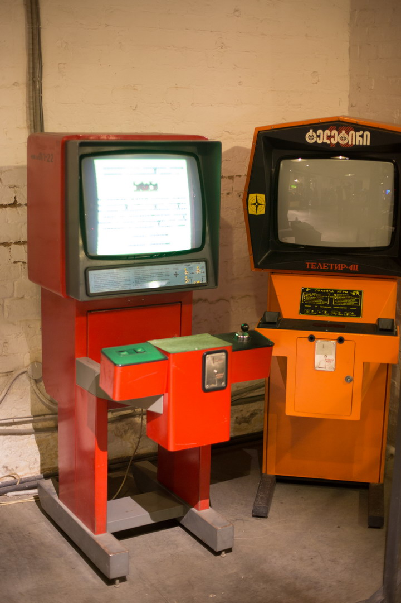
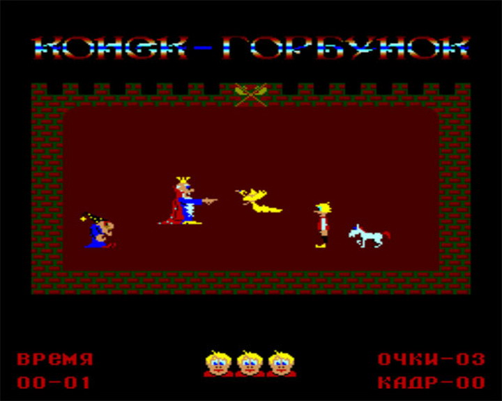

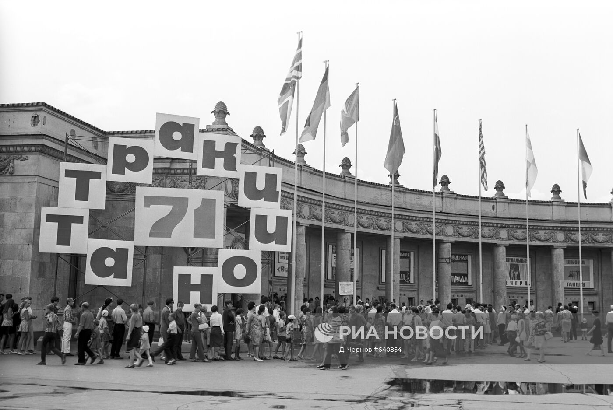
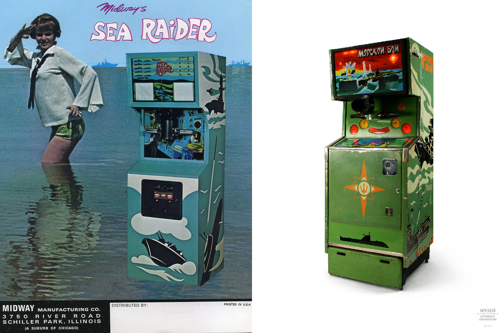
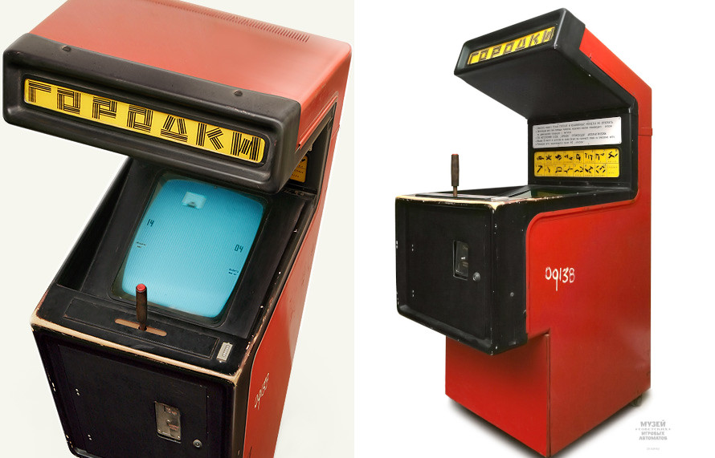
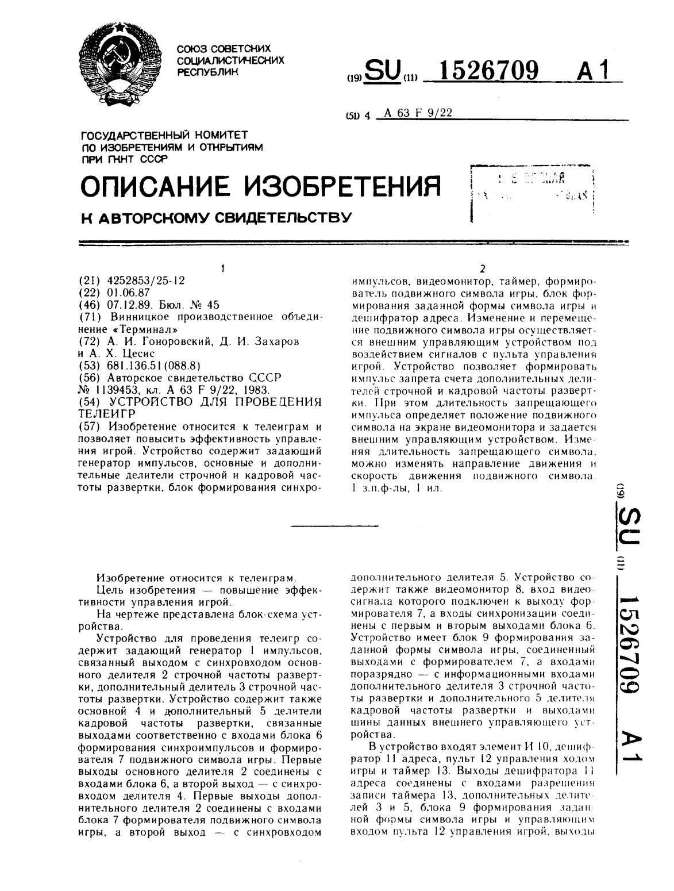
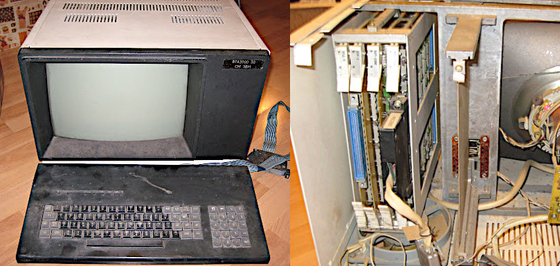
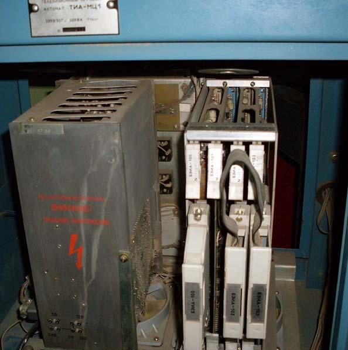
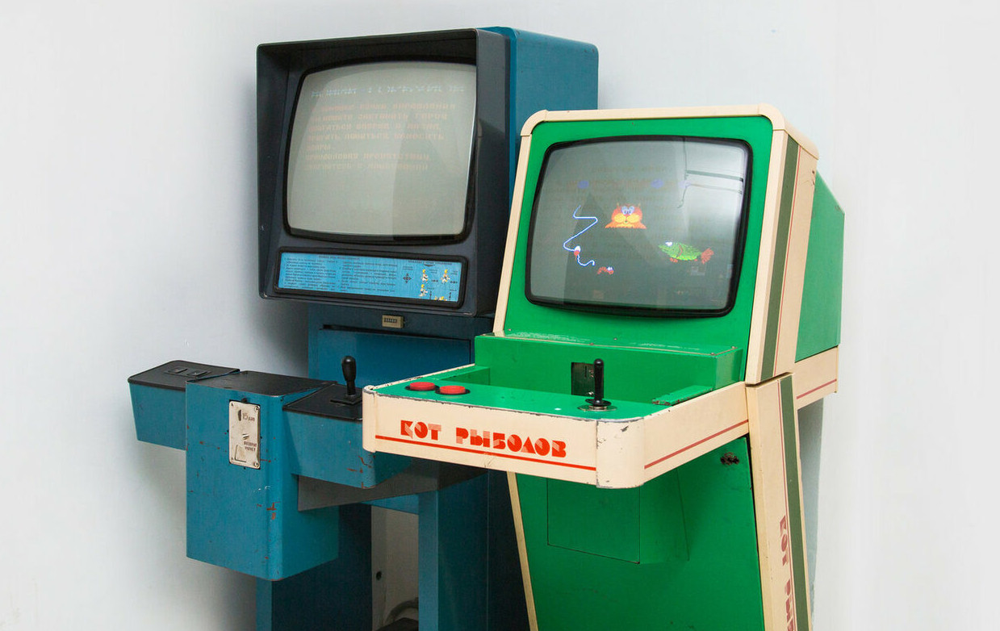
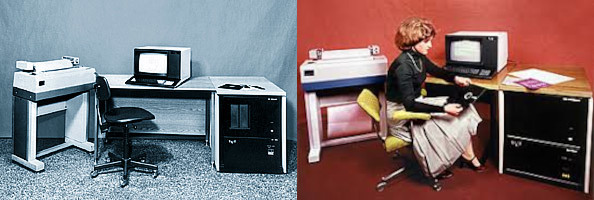
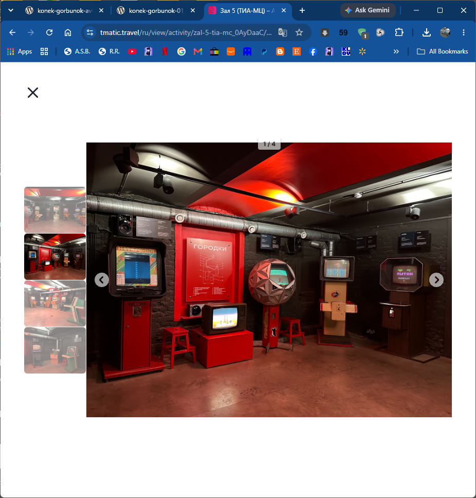
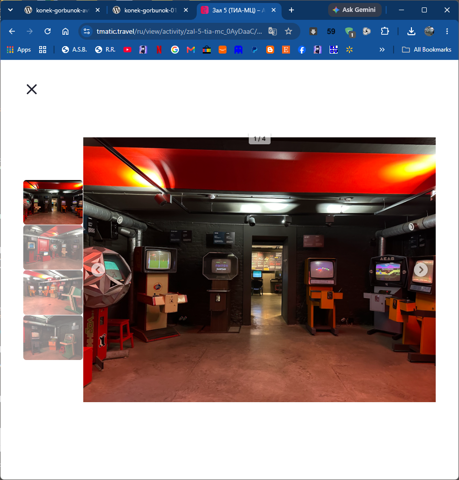
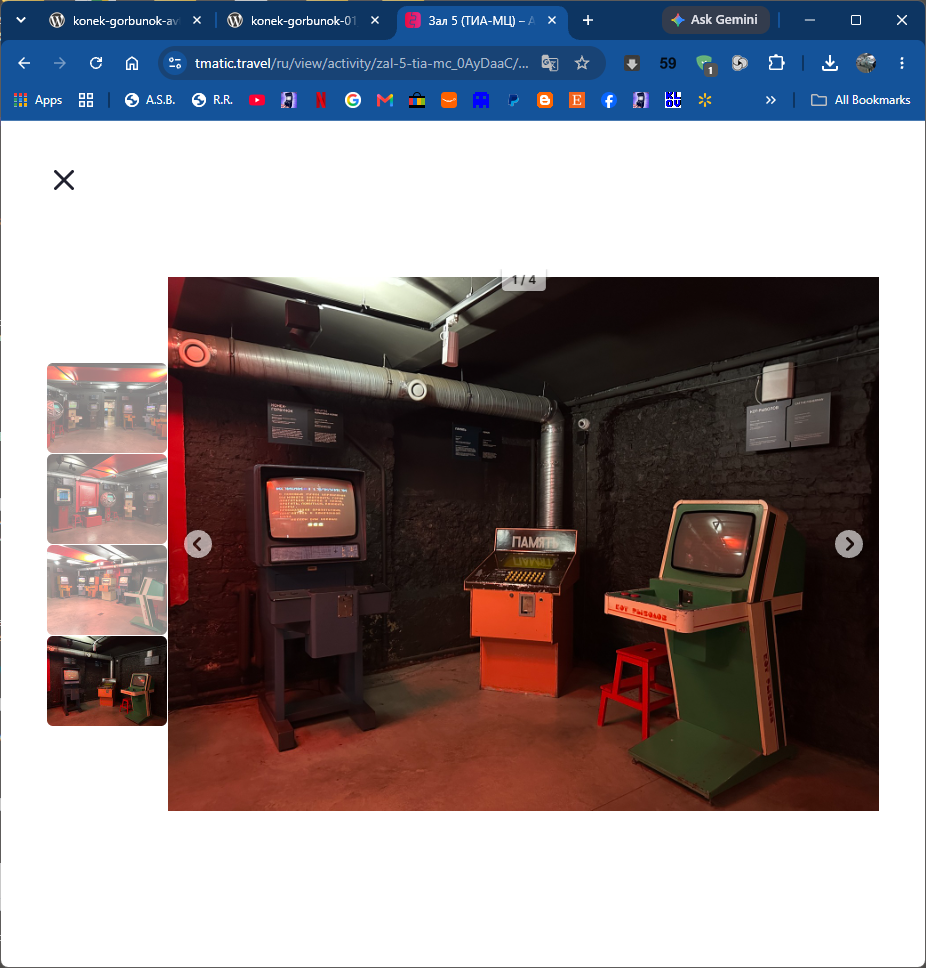
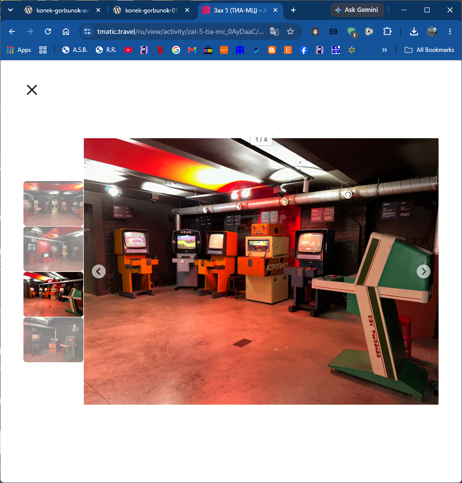
Have something we’re missing?
This is a living research archive. If you have a Terminal flyer, photograph, cabinet, document, employee recollection, correction, production record, serial number, or evidence that contradicts something here, we welcome it.
Send corrections, photographs, documents or firsthand recollections to dde.biz@gmail.com.